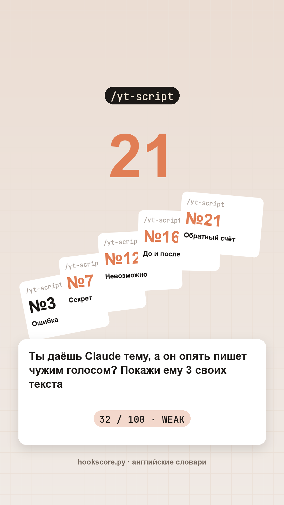
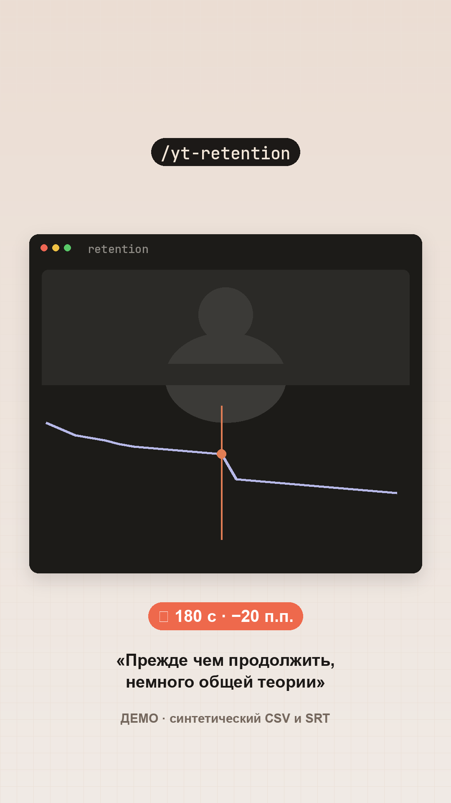
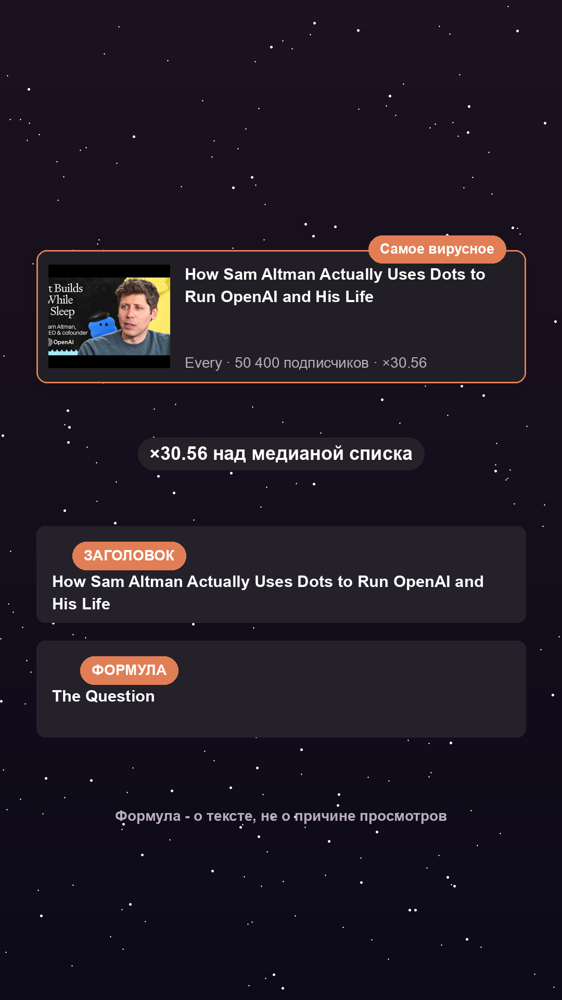

Инструкция · Claude · 2 ноября 2026
YouTube с Claude: 7 запросов и набор из 11 навыков
Начальный уровень
С Claude ты соберёшь всё для YouTube-канала: тему, образ, план на 90 дней, готовый сценарий, заголовок, идею обложки и способы заработка помимо рекламы. Первая часть работает в обычном чате Claude без установки, а вторая поможет подключить бесплатный набор из 11 навыков для задач, которые повторяются каждую неделю
Содержание статьи
Содержание
- Что понадобится
Часть 2. Подключи набор в Claude Code
Часть 3. Проверь материалы перед выпуском
Что понадобится
Для семи запросов нужен доступ к Claude в браузере. Тему канала продумай заранее. Открой новый чат и отправляй задания по одному. Продолжай в этом же разговоре: следующие шаги используют предыдущие ответы
Проверь список поддерживаемых регионов Anthropic: Россия в него не входит. Как подключить Claude из России, рассказываем в отдельной статье. Если подключить не получается, эти же запросы можно отправить любой нейросети, которой ты пользуешься
Партнёрская программа YouTube недоступна для каналов с российским регионом, а новые аккаунты AdSense с регионом Россия не создаются: Google ограничил монетизацию на этой территории. Поэтому способы заработка из шага 6 рассматривай отдельно от рекламы YouTube. Условия указаны в официальной справке
Для второй части нужен Claude Code, помощник с доступом к папке на компьютере, и Python 3 для инструментов набора. Установка разобрана в начале части 2
Ниже ответы Claude на семь запросов по теме «Claude и нейросети для экспертов». «0 подписчиков» - условие нового канала в шестом запросе
Часть 1. Подготовь в чате всё для YouTube-канала
Впиши свою тему
«Нейросети» слишком широко. «Claude и нейросети для экспертов, которые сами делают контент» задаёт и тему, и зрителя. Цветом в запросах выделены значения для нашего примера. Если тема уже выбрана, начни с шага 2
| Шаг | Что меняешь | Что получаешь |
|---|---|---|
| 1. Ниша | Тему | 10 направлений и вопросы для проверки дохода и спроса |
| 2. Образ канала | Тему | 5 названий, слоган, зрителя, 4 темы и особенность подачи |
| 3. План | Тему | 12 поисковых гипотез и график на 90 дней |
| 4. Сценарий | Название из плана | Реплики по времени и то, что показать |
| 5. Упаковка | Название | Заголовок, описание, 10 тегов и два варианта обложки словами |
| 6. Заработок | Тему и число подписчиков | Идеи продуктов, партнёрств, подарка и письмо спонсору |
| 7. Переупаковка | Тему, название и текст сценария | Пост, ветку, 3 зацепки, письмо и описание для Pinterest |
Шаг 1. Выбери направление
Первый запрос помогает увидеть десять направлений. Доход с тысячи просмотров и спрос проверяй по аналитике: обычный чат сам не получает доступ к статистике каналов
Замени то, что в [скобках], на своё, скобки убери
Я выбираю тему YouTube-канала про [Claude и нейросети для экспертов]. Разбери 10 ниш YouTube с высоким доходом с тысячи просмотров, низкой конкуренцией и спросом, который не проходит со временем. Для каждой дай: примерный доход с тысячи просмотров, сложность съёмки, способы заработка помимо рекламы и идею канала в 3 словах. Не придумывай доход и спрос; если данных нет, так и напиши.Шаг 2. Собери образ канала
Введи свою нишу. Просьбу придумать отличительную черту читай как предложение формы канала: нейросеть не знает твою биографию и не может сама установить преимущество
Я запускаю YouTube-канал про [Claude и нейросети для экспертов]. Собери полный образ канала: название (5 вариантов), слоган, портрет зрителя, 4 главные темы и мою «фишку», которая отличает меня от других авторов.Шаг 3. Попроси план на 90 дней
Продолжи в том же чате. Попроси график, который подходит твоему времени на съёмку. Метка «поиск» обозначает тему под вопрос зрителя. Частотность этого вопроса нужно проверить отдельно
Составь план роликов на 90 дней для нового YouTube-канала про [Claude и нейросети для экспертов]. Добавь: 12 названий под поиск, график выхода, какие ролики снимать под поиск, а какие под охват, и порядок тем, который шаг за шагом делает меня экспертом для зрителя.Шаг 4. Получи сценарий
Вставь название ролика из своего плана с шага 3. Здесь выбрано «Как дать Claude свой голос: 3 текста вместо длинного промпта». Попроси опираться только на твои реальные случаи и цифры
Напиши полный сценарий YouTube-ролика «[Как дать Claude свой голос: 3 текста вместо длинного промпта]». Структура: зацепка (первые 30 секунд, чтобы зритель не ушёл), усиление проблемы, решение по шагам, 3 главные мысли, призыв к действию и анонс следующего ролика на финальной заставке.Шаг 5. Подготовь заголовок и обложку
Попроси название и обложку вместе. Иначе они легко повторяют одну мысль одними словами, хотя места для объяснения и так мало
Для ролика «[Как дать Claude свой голос: 3 текста вместо длинного промпта]» дай: два варианта обложки с текстом на каждой, название под поиск YouTube (до 60 знаков), описание (с таймкодами, ключевыми словами и ссылками) и 10 тегов. Подскажи, как сравнить два варианта обложки на зрителях.Шаг 6. Разбери заработок помимо рекламы
Впиши реальное число подписчиков, даже если их пока нет. Запрос предложит способы получать доход от своей работы. Для выбора продукта пригодятся вопросы и задачи твоих зрителей
У меня YouTube-канал про [Claude и нейросети для экспертов], [0] подписчиков. Составь план заработка помимо рекламы YouTube: партнёрские программы, идеи своих цифровых продуктов, шаблон письма спонсору и бесплатный подарок, за который зритель оставит почту.Шаг 7. Переупакуй один ролик
Отправь запрос после сценария в том же чате. Проверь, что во всех форматах остались те же факты: выдуманный случай из сценария иначе появится и в письме, и в коротком видео
На месте [СЦЕНАРИЙ] вставь сюда сценарий из шага 4
Переупакуй сценарий YouTube-ролика «[Как дать Claude свой голос: 3 текста вместо длинного промпта]» для канала про [Claude и нейросети для экспертов] в: пост для Telegram-канала, ветку для Threads, 3 зацепки для Shorts, письмо для рассылки и описание для Pinterest. Подскажи, какие площадки важнее для моей ниши.
Сценарий:
[СЦЕНАРИЙ]Часть 2. Подключи набор в Claude Code
Шаг 1. Установи готовый набор навыков
Когда задача повторяется, удобнее хранить правила рядом с помощником. YouTube Agent Skill это набор из 11 папок с инструкциями для Claude Code и шестью небольшими Python-инструментами. Автор набора - Джейк Скинкариол. Например, вместо длинного объяснения структуры сценария ты вызываешь /yt-script и даёшь тему
Если Claude Code ещё нет, открой нашу инструкцию установки в VS Code и выполни шаги для расширения Claude Code for VS Code от Anthropic
Затем в VS Code выбери Файл → Открыть папку, открой папку своего канала и нажми значок Claude, оранжевое солнышко. Войди в аккаунт Claude, если появится запрос
В поле сообщения открывшегося чата вставь весь блок ниже и отправь его стрелкой
https://github.com/Jakeschincariol/youtube-agent-skill
Установи этот набор навыков, затем проверь, что /yt-script работаетПосле установки введи /yt-script и тему первого ролика. Если команда не появилась, попроси проверить, в какой папке лежат навыки и загружает ли их текущая сессия. Если Python не найден, попроси помочь с его установкой; текстовое описание навыка само проверочный инструмент не запускает
В обычном браузерном чате ссылка не даёт доступ к файлам компьютера. README предлагает вставить содержимое одного SKILL.md в начало чата как правила разговора. В этом режиме Python-инструменты запускаются отдельно
Шаг 2. Передай свой голос
Набор читает voice.md: кому ты говоришь, как звучишь и каких слов избегаешь. Claude Code создаст файл сам по шаблону набора. Открой три своих текста, скопируй их вместо выделенного значения и отправь запрос в тот же чат Claude Code
Создай ~/.claude/youtube/voice.md по шаблону набора из этих трёх моих текстов: [ТЕКСТЫ]
Бери правила из моих реальных фраз. Не придумывай мой опыт, доход, кейсы и биографию. Покажи созданный файл, чтобы я мог проверить правила.Прочитай созданный файл и поправь выводы, которые не похожи на твою речь. При следующих заданиях набор читает voice.md из ~/.claude/youtube/voice.md и использует эти правила
Одиннадцать команд и их результат
| Команда | Что получится |
|---|---|
/yt-script | Из идеи делает сценарий: пять хуков по 21 формуле, оценка, реплики и кадры |
/yt-package | Проверяет заголовок и обложку как одну пару |
/yt-edit | Из расшифровки с временем делает список монтажных правок: паузы, слова-паразиты и повторы |
/yt-comment | Делит комментарии на четыре группы, пишет ответы и предлагает один для закрепления |
/yt-plan | Планирует выпуски с учётом доступных часов и уже готовых материалов |
/yt-viral | Сравнивает просмотры видео с медианой своего канала в собранном публичном списке |
/yt-retention | Читает CSV удержания (таблицу, которую выгружаешь из YouTube Аналитики), отмечает потери и сопоставляет их с расшифровкой |
/yt-shorts | Выбирает самостоятельные отрезки расшифровки и пишет новую первую фразу для каждого |
/yt-seo | Готовит описание, теги и три поисковых запроса |
/yt-chapters | Готовит главы по расшифровке и проверяет начало 00:00, минимум три главы и длину от 10 секунд |
/yt-audit | Разбирает канал и заканчивает одной приоритетной правкой |
Набор сам ничего не публикует. /yt-edit выдаёт список правок с таймкодами, а /yt-shorts отрезки и новые первые фразы. Готовые MP4 они не создают: правки применяешь в монтажной программе. Для удержания нужен твой CSV, для фразы у провала ещё и расшифровка с временем. Без исходников модель не узнает, что ты говорил в конкретную секунду
CSV удержания возьми в YouTube Studio → Контент → нужный ролик → Аналитика → Вовлечение → Удержание аудитории → значок экспорта → CSV и передай его Claude Code вместе с расшифровкой
Посмотри результаты инструментов
В набор входят шесть инструментов. Четыре примера ниже показывают их ответы: оценки начала и заголовка, учебный график удержания и сравнение публичных просмотров
| Инструмент | Что получишь | Пример или исходник | Что учитывать |
|---|---|---|---|
| hookscore.py | Оценку первой фразы и замечания к ней | Пять русских хуков: 32, 32, 32, 31 и 26 из 100 | Инструмент ищет английские слова; русский текст лучше проверить чтением вслух |
| title.py | Длину заголовка и предупреждение об обрезке на телефоне | Первая пара: 98/100; заголовок 60 знаков | Оценка не предсказывает клики; повтор русских слов проверяй самостоятельно |
| deadair.py | Список пауз, повторов и слов-паразитов с таймкодами | Нужна расшифровка с временем | Правки применяешь в монтажной программе |
| chapters.py | Главы с проверкой начала 00:00 и длительности | Нужна расшифровка готового ролика | Для глав нужно хотя бы три отрезка от 10 секунд |
| retention.py | Секунды потери зрителей и реплику рядом, если передана расшифровка | 25 учебных точек; провал на 180 с, потеря 20 процентных пунктов | График и расшифровка созданы для примера; провал задан вручную |
| swipe.py | Видео, которые опередили обычные просмотры своего канала в собранном списке | 148 видео из 5 каналов; Every: ×30.56 | Сравнение относится к собранной выборке |


Инструмент нашёл реплику «Прежде чем продолжить, немного общей теории». Мы специально поместили её рядом с провалом в учебной расшифровке. В реальном видео совпадение секунды и фразы ещё не доказывает причину ухода: посмотри сам фрагмент
В примере использованы публичные списки Matt Wolfe, MattVidPro, TheAIGRID, AI Coffee Break with Letitia и Every: до 30 видео на канал. У двух видео просмотры отсутствовали, поэтому они исключены из сравнения

У канала Every в публичном списке 50 400 подписчиков. Видео How Sam Altman Actually Uses Dots to Run OpenAI and His Life получило 191 000 просмотров при медиане 6 250: 191 000 / 6 250 = ×30.56. Эти числа относятся к моменту сбора 1 ноября. Просмотры в публичном списке округлены YouTube поэтому кратность тоже ориентир по этой выборке
Инструмент назвал формулу заголовка The Question, то есть вопрос. Из неё можно взять способ подачи «как человек решает конкретную задачу». Для нашей темы получится «3 своих текста: собираем правила голоса Claude»
Часть 3. Проверь материалы перед выпуском
Проверь, что ответ пригодится
У хорошего ответа есть твоя конкретная задача. В образе канала виден зритель, которому нужно объяснить работу с нейросетью. В названиях есть вопрос, который можно проверить. В сценарии у каждого отрезка написано, что показать. Общую фразу «создавай качественный контент» невозможно превратить в кадр
Прочитай реплики вслух и сверь факты с исходниками. В файле голоса должны быть твои примеры. В заголовке и обложке должна быть понятна тема ролика. Если ответ слишком общий, уточни, для кого он и в каких условиях человек будет повторять действие
Отдели предположения от цифр
| Что предлагает модель | Где брать подтверждение |
|---|---|
| Доход с тысячи просмотров | Свой RPM в YouTube Studio, когда доступна статистика дохода. Переводить зарубежные оценки на свой канал коэффициентом нельзя |
| Поисковые названия | Вкладка «Тренды» в YouTube Studio и доступные запросы зрителей. Наличие данных зависит от региона, языка и канала |
| Победитель обложек | Результат A/B-теста по времени просмотра в YouTube Studio |
| Таймкоды и главы | Готовый ролик и расшифровка с реальным временем. Сценарные метки сначала примерные |
| Теги | Официальная справка: помогают при вариантах написания, но название, обложка и описание важнее |
| Причина провала удержания | CSV, расшифровка и просмотр самого фрагмента. Совпадение по времени даёт точку для проверки |
| «Вирусный» заголовок | Публичные просмотры, определённая выборка и медиана; формула заголовка не доказывает причину успеха |
Для доли дохода от рекламы в Партнёрской программе YouTube базовый порог: 1 000 подписчиков и 4 000 действительных часов публичного просмотра за последние 12 месяцев либо 10 млн действительных публичных просмотров Shorts за 90 дней. Кроме чисел есть требования программы и доступность по стране. Выполнение порога не означает автоматическое принятие
Исправь типичные ошибки
| Что видишь | Что произошло | Что сделать |
|---|---|---|
| «Мои клиенты получили», хотя такого кейса нет | Модель дописала правдоподобную историю | Удали её целиком или замени настоящим случаем. Добавь запрет на выдуманный опыт |
| Процент или доход без источника | Модель придумала убедительную цифру | Попроси источник. Если его нет, убери число |
| На шаге 7 просят прислать сценарий | Открыт другой чат или сценарий не передан | Вернись к цепочке либо приложи сценарий целиком |
| Все идеи подходят любому каналу | Ниша слишком широкая | Добавь читателя, задачу и условия съёмки |
| Оценка русского хука кажется странной | Инструмент ищет английские слова | Прочитай начало вслух и оцени, понятно ли, о чём ролик |
| После /yt-shorts нет видеофайлов | Навык подготовил задания на нарезку | Открой исходное видео в редакторе и примени выбранные отрезки |
| Команда не найдена | Навык не загружен текущей сессией | Попроси проверить место установки и доступность команды в Claude Code |
| CSV не читается | Нет числовых столбцов или слишком мало точек | Передай экспорт с позицией и процентом удержания; скрипту нужно хотя бы восемь точек |
Сохрани все семь запросов
Скопируй этот блок в заметки. В чат отправляй запросы по одному, сверху вниз, без номера. В седьмой запрос подставь сценарий из шага 4
1. Я выбираю тему YouTube-канала про [Claude и нейросети для экспертов]. Разбери 10 ниш YouTube с высоким доходом с тысячи просмотров, низкой конкуренцией и спросом, который не проходит со временем. Для каждой дай: примерный доход с тысячи просмотров, сложность съёмки, способы заработка помимо рекламы и идею канала в 3 словах. Не придумывай доход и спрос; если данных нет, так и напиши.
2. Я запускаю YouTube-канал про [Claude и нейросети для экспертов]. Собери полный образ канала: название (5 вариантов), слоган, портрет зрителя, 4 главные темы и мою «фишку», которая отличает меня от других авторов.
3. Составь план роликов на 90 дней для нового YouTube-канала про [Claude и нейросети для экспертов]. Добавь: 12 названий под поиск, график выхода, какие ролики снимать под поиск, а какие под охват, и порядок тем, который шаг за шагом делает меня экспертом для зрителя.
4. Напиши полный сценарий YouTube-ролика «[Как дать Claude свой голос: 3 текста вместо длинного промпта]». Структура: зацепка (первые 30 секунд, чтобы зритель не ушёл), усиление проблемы, решение по шагам, 3 главные мысли, призыв к действию и анонс следующего ролика на финальной заставке.
5. Для ролика «[Как дать Claude свой голос: 3 текста вместо длинного промпта]» дай: два варианта обложки с текстом на каждой, название под поиск YouTube (до 60 знаков), описание (с таймкодами, ключевыми словами и ссылками) и 10 тегов. Подскажи, как сравнить два варианта обложки на зрителях.
6. У меня YouTube-канал про [Claude и нейросети для экспертов], [0] подписчиков. Составь план заработка помимо рекламы YouTube: партнёрские программы, идеи своих цифровых продуктов, шаблон письма спонсору и бесплатный подарок, за который зритель оставит почту.
7. Переупакуй сценарий YouTube-ролика «[Как дать Claude свой голос: 3 текста вместо длинного промпта]» для канала про [Claude и нейросети для экспертов] в: пост для Telegram-канала, ветку для Threads, 3 зацепки для Shorts, письмо для рассылки и описание для Pinterest. Подскажи, какие площадки важнее для моей ниши.
Сценарий:
[СЦЕНАРИЙ]Памятка перед записью
- Одна цепочка живёт в одном чате; название для сценария берёшь из плана
- Перед отправкой проверь свою тему, название, число подписчиков и текст сценария
- График подгоняешь под время на съёмку, поисковые названия проверяешь по вопросам аудитории
- Личные истории, проценты и доход сверяешь с реальными материалами
- Сценарий читаешь вслух, таймкоды уточняешь по готовому видео
- Обложку собираешь отдельно; пары сравниваешь по времени просмотра в Studio
- Для /yt-retention нужен CSV, для реплики у провала ещё и расшифровка
- Навыки готовят материалы; монтаж и публикация остаются отдельными действиями
Частые вопросы
Какие запросы нужны для YouTube-канала?
Ниша, образ канала, план, сценарий, упаковка, заработок и переупаковка. Отправляй их в одном чате. Если тема уже выбрана, начинай с образа канала
Можно верить доходу с тысячи просмотров из ответа?
В ответе Claude есть диапазоны RPM по широким категориям для англоязычной аудитории. Для части узких направлений отдельных данных нет. Сверяй доход своего канала с собственной аналитикой и действующими условиями монетизации
Сколько времени займут все семь шагов?
Это зависит от длины ответов, лимитов модели и готовности исходников. Заложи время на выбор тем, чтение сценария вслух и проверку материалов перед съёмкой
Claude нарисует обложку по пятому запросу?
Этот запрос даёт идеи текстом: композицию, надпись и цвета. Саму обложку нужно собрать в редакторе или генераторе изображений
Нужна подписка для набора?
Сам набор опубликован по MIT. Доступ к Claude Code, лимиты модели и дополнительные инструменты определяются условиями выбранной среды отдельно
Навыки сами смонтируют и выложат ролик?
Нет. /yt-edit даёт список правок, /yt-shorts предлагает фрагменты и первые фразы. Набор не меняет видеофайлы и ничего не публикует
Можно использовать набор без Claude Code?
README допускает вставку одного SKILL.md в обычный чат как правил ответа. В таком режиме шесть Python-инструментов не выполняются автоматически
Получится зарабатывать на рекламе YouTube из России?
Сейчас авторы из России не могут вступить в партнёрскую программу. Отдельно рассматривай свои продукты, услуги и партнёрства, проверяя их условия
Источники и следующий шаг
- README YouTube Agent Skill: установка, состав, ограничения
- Правила всех 11 навыков сохранённой версии
- Шаблон файла голоса voice.md
- A/B-тестирование названий и обложек
- Правила глав в видео
- Роль тегов
- Условия Партнёрской программы
- Доступность партнёрской программы по странам
- Доход на тысячу просмотров
- Идеи и поисковые запросы в Studio
Когда сценарий, обложка и короткие фрагменты подготовлены, остаётся связать контент со своей задачей: что человек найдёт после просмотра и куда перейдёт. Такой же порядок можно собрать для продукта, сайта и воронки. Ниже можно посмотреть, какие задачи нейросеть выполняет, если не знаешь кода
Что можно делать с нейросетями, если не знаешь кода?
Чтобы почувствовать размах, посмотри Концентрат Ивана Сергеева в записи. ИИ-агенты на твоих глазах собирают продукт, контент, сайты и воронки без кода. Это основа под любую цель: свои услуги, партнёрка, чужой бизнес. Три вечера в записи, промпты и четыре скилла. 990 ₽ один раз. Доступ на 14 дней после оплаты.
Забрать КонцентратУже знаешь, чего хочешь? Тогда в мастер-группу Ивана: система продаж на ИИ без продюсера и технаря, сопровождение и сообщество
Заполнить анкету предзаписиНабор открывается редко, кто записался заранее, получает лучшую цену и бонусы. Платить сейчас не нужно
Реклама. ИП Сергеев И. С., ИНН 352511695540. erid: 2Vtzqwfc8iA